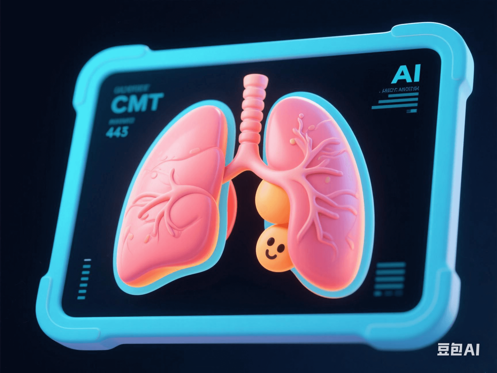

AI Detects Lung Cancer in Uncle Wang Three Years Early! Lung CT Simulation Technology Revealed
PeaceLove.Top Insights :2025-04-19
🫁 Uncle Wang's Lung Cancer Detected Three Years Early by AI! Lung CT Simulation Technology Revealed
👨🦳 Uncle Wang, a 65-year-old man, never thought that a second look from AI would save his life. A few months ago, he had a low-dose chest CT (LDCT) during a routine physical examination. The doctor used the newly launched lung CT AI simulation system, and the result was astonishing: the system pointed out a high-risk micro-nodule evolution trend in the lower left lobe of the lung and predicted that it was highly likely to develop into cancer in the next two to three years 🔥. After a re-examination, a tissue biopsy confirmed early-stage lung cancer! If they had waited until the lesion was 'visually observable' on the image, it might have been too late 😱.
🧠 What is the Lung CT AI Simulation Technology?
This breakthrough technology was jointly developed by several top-tier hospitals in China and an artificial intelligence company. Its core lies in:
- 🔍 AI identifies tiny lung lesions: It can detect millimeter-sized nodules earlier than the human eye.
- 📈 It establishes a timeline model for nodule development to predict the malignancy probability of nodules.
- 🧬 It integrates genetic data, past medical histories, and imaging features to simulate the evolution path within three years.
✨ It can be understood as a 'prediction map' of future lesions!
🩻 What Are the Technological Breakthroughs?
Although LDCT has been widely used in traditional lung cancer screening, it faces many challenges:
| Problems | Traditional Methods | AI-Assisted Simulation Technology |
|---|---|---|
| Nodule Discrimination | Judged by doctors' experience | 🧠 The model accurately classifies (benign/malignant/suspicious) |
| Development Speed | Static images | 🕒 Dynamically simulates the future growth path |
| Early Screening Effect | Relies on regular re-examinations | 📈 One image can predict changes in the next three years |
It is reported that the system was trained on millions of high-resolution lung image data and integrates AI deep learning, image time-series modeling, and epidemiological data matching to achieve 'temporal prediction' of lung cancer precursors!
📊 How Effective Is It?
🏥 In a clinical pilot at a top-tier hospital in 2024, the positive detection rate of early screening using the AI simulation system increased by 32.4%! The misdiagnosis rate decreased by 18%, and the risk of cancer development was identified on average 2.8 years earlier. More importantly, many people had no symptoms, but the image data revealed 'future danger signals'!
💬 Why Is 'Early Screening' So Important?
Lung cancer is one of the cancers with the highest mortality rates globally, but it is also a typical disease where early detection means a high cure rate. 🎯 Comparison of 5-year survival rates:
| Stage | Detection Method | Survival Rate |
|---|---|---|
| Early stage (0-I) | AI prediction & CT | 🟢 80-90% |
| Middle-late stage (after III) | Seeking medical attention due to symptoms | 🔴 <30% |
If the lesion can be detected three years earlier, many patients can be completely cured. They may not even need chemotherapy or surgery, only minimally invasive intervention or targeted drugs.
⚖️ Real-World Bottlenecks and Ethical Discussions
Although the AI simulation technology has broad prospects, it still faces challenges:
- 💵 Cost issue: It currently requires high-performance computing resources and has not been popularized in grass-roots physical examination institutions.
- 🧑⚕️ The boundary between doctors and AI: AI is only a'second opinion' and does not replace doctors' decisions.
- 🧬 Concerns about over-diagnosis: Could predictive findings lead to 'unnecessary treatment'? In particular, how to balance the intervention scale between 'potential cancer' and 'actual risk' has become a new ethical question.
🧭 Future Directions: AI Prediction for Annual Physical Examinations?
Experts said that lung AI prediction screening is expected to:
- ✅ Be included in the annual physical examinations of high-risk groups (such as smokers and those exposed to urban pollution).
- ✅ Be used in combination with respiratory function monitoring and liquid biopsy to build a multi-dimensional early-warning system.
- ✅ After being promoted nationwide, it may turn lung cancer from a 'high-fatality' to a 'high-cure' disease 🛡️
🔚 Uncle Wang said with emotion, 'I didn't feel anything. If it weren't for AI, it would have been too late when the disease showed symptoms.' 📣 Would you like to have an AI-based 'future disease prediction' every year?